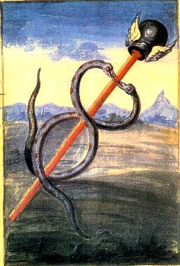
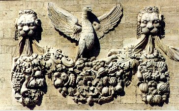
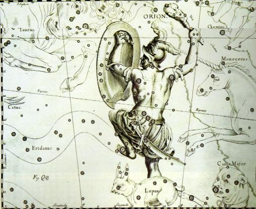
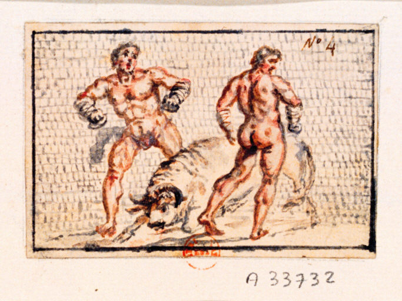
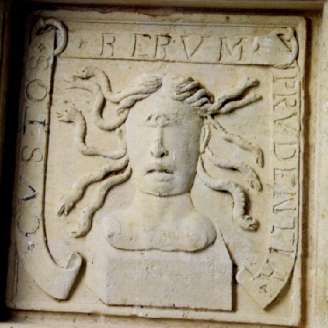
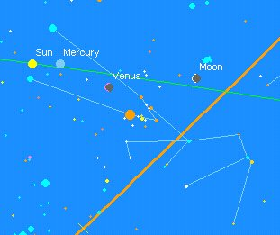
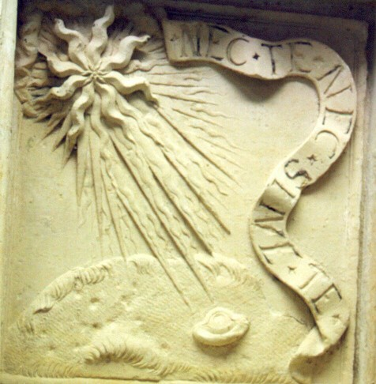
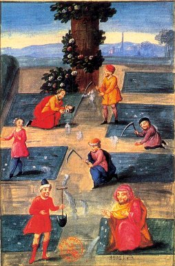
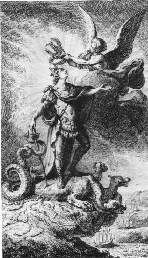

Emblema XXXVIII.
revu le 27 juillet 2003
Rebis, ut Hermaphroditus, nascitur ex duobus montibus, Mercurii & Veneris.
(Le Rebis, comme Hermaphrodite, naît de deux montagnes : celle de Mercure et celle de Vénus1.)
Les vieux récits font de Rebis un être double :
Androgyne, mâle et femelle en un seul corps.
Il est, né sur le double mont, Hermaphrodite
A Mercure enfanté par l’auguste Vénus2.
Ne le méprise pas pour son sexe ambigu :
Cet homme-femme un jour te donnera le roi3.
Comme on demandait à Socrate quelle était sa patrie, il répondit qu’il était cosmopolite ou citoyen du monde. Il voulut indiquer par là que, bien que né de corps à Athènes, il parcourrait librement, par son esprit, le monde entier et tout ce qu’il contient, puisque le sage a pour patrie la terre entière pour qu’il y vive bien. Si l’on demande aux philosophes quelle est la patrie de leur Hermaphrodite, ils répondent qu’il est cosmique (mundanum), qu’il est visible dans tous les coins du monde, là où l’on trouve les Eléments4 ; c’est bien le fils des Sages, lui qui possède avec eux une patrie commune. Cependant il n’arrive pas que l’on naisse à deux ou plusieurs reprises, nul ne fait son entrée pour la première fois à cette lumière en des lieux divers mais en un seul ; comme Socrate est tenu pour Athénien, le Rebis est réputé être l’habitant de deux monts qui sont ceux d’Hermès et de Vénus, d’où aussi le nom d’Hermaphrodite qu’on lui donne, à cause de ses deux parents5. Ses lares aussi sont dans les montagnes, sa patrie est élevée et il descend donc d’êtres de haute naissance. Certes, ce n’est pas un facteur dénué d’importance, si l’on veut accomplir de grandes choses, qu’une patrie noble et puissante, dans laquelle les citoyens sont préférés aux étrangers6et portés aux charges publiques pour éviter qu’ils ne demeurent dans l’obscurité, — comme cela se produit dans les endroits modestes —, et faire que rejaillisse sur eux quelque chose de l’éclat de leur patrie, mais il est plus grand encore de se distinguer par ses propres vertus, même si l’on appartient à une pauvre maison, et de procurer soi-même de la lumière à son pays. C’est ainsi que ces montagnes, qui sont inconnues de beaucoup, acquièrent de la renommée grâce à l’Hermaphrodite7, à ses illustres exploits et à son nom célèbre à travers toute la terre. Qui en effet, ayant tant soit peu pratiqué les livres des philosophes, n’a pas reconnu le Rebis ? Qui n’a pas vu ou aperçu l’androgyne à deux têtes ? Il s’est fait connaître certes, jusqu’aux Indes et sa renommée s’est répandue plus loin que celle du roi Alexandre lui-même.
Nombreux sont ceux qui partent de régions lointaines pour voir et interroger quelque savant, ou encore un homme fameux pour sa compétence dans le domaine militaire, l’art ou la science. Mais bien plus nombreux sont ceux qui se rendent à ces monts du Rebis, pour peu qu’ils sachent en quel endroit on peut les rencontrer. Morien raconte lui-même dans son livre avec quel zèle et quel soin, après avoir quitté Rome, il rechercha Adferus d’Alexandrie qu’il finit par trouver. Il doit, pour cette raison, être tenu pour fortuné et aimé de Dieu, en ce qu’il apprit d’un précepteur vivant et non d’un livre muet, et qu’il vit en face cette chose qui est le lieu natal du Rebis. Ils doivent témoigner une persévérance et un zèle non moins grands, ceux-là qui, instruits par la raison et les indications des livres, cherchent seuls la patrie du Rebis. Car, bien que les livres semblent parfois contenir de la clarté, celle-ci est entourée et voilée de tous côtés par une grande obscurité, au point que l’on a peine à reconnaître et à discerner l’une de l’autre. C’est pourquoi il faut s’y avancer avec précaution, afin de ne pas les utiliser comme poison, alors qu’ils ont été préparés comme remède. Ils constituent un Océan immense8. Pendant qu’ils errent sur cet océan, les navigateurs éprouvés peuvent connaître la latitude, qui est l’élévation de l’Equateur au-dessus de l’horizon, au moyen d’instruments astronomiques, car l’aiguille aimantée indique le pôle septentrional, mais il leur est impossible de savoir la longitude, c’est-à-dire le nombre de degrés qui les sépare du méridien d’origine situé tout près des Iles Fortunées9. C’est pourquoi ils ignorent en quel lieu ils se trouvent entre le couchant et le levant. Que doit-on faire à ce moment ? Ce que font d’ordinaire les navigateurs, assister l’expérience par la raison, et apprendre de celle-ci à régler un long voyage au moyen de signes particuliers, promontoires, îles et autres, afin de ne pas heurter par imprudence des bancs de sable ou des écueils. Le péril ici est moindre si la navigation n’avance pas — et si elle avance on trouve grand profit — que là où, en une heure, on est perdu corps et biens10.
La montagne du mercure philosophique est, non la montagne de Nonacris11 ou d’Atlas où l’on croit parfois qu’il est né, mais le Parnasse aux deux sommets dont l’un est la résidence d’Hermès, l’autre celle de Vénus. Là se trouvent aussi Apollon avec les Muses et la fontaine de Pégase, l’Hippocrène avec le laurier toujours vert12. Ce mont possède un nom unique, mais en réalité il est double comme on voit l’Hermaphrodite avec deux têtes et deux sortes de membres en un seul corps. Mais en est-il un entre mille pour persévérer dans la tentative de parvenir au sommet de ce mont ? Qui ne reste collé aux racines, entravé par je ne sais quels rémores ? Combien en est-il pour atteindre le centre de son nombril ?
" Car l’ascension n’est pas aisée pour qui veut gagner les hauteurs escarpées ;
Une abondante sueur le fait disparaître ; sans sommeil, privé de l’olivier nocturne,
II dépérit, et détruit tout ce qu’il avait jusqu’alors loué le plus en lui-même,
Celui qui désire recevoir l’honneur du feuillage éternel. "13
Aussi n’est-il pas étonnant que sur dix mille un seul mène à leur terme ces travaux d’Hercule, plante son pied sur la cime du mont, et reçoive la récompense immortelle du laurier. Que tous ceux qui sont ouverts à l’enseignement, adonnés à la vertu et aux lettres, et qui possèdent un esprit bon tirent leur joie de ce prix, et que les porcs et les chiens en soient privés, tel doit être notre seul souhait14.
Notes1. Chapitre consacré au Rebis, chose double, androgyne hermétique. A première vue, il semble curieux que Mercure et Vénus soient consacrés à l'hermaphrodite et l'on aurait, d'instinct, vus Vénus et Mars, lieux d'exaltation, respectivement, de la Lune et du Soleil. Aussi bien, n'est-ce pas de la Vénus minérale que Maier veut nous parler, mais bien plutôt de la Vénus hermétique, à double sens, comme on l'a vu dans les chapitres précédents.

FIGURE I
(Livre d'Abraham Juif, figure 2)Pour ce qui est de Mercure, il ne fait pas de doute que le signe des Gémeaux lui soit consacré et il montre admirablement la nature double du futur embryon hermétique. Voyez ici l'humide radical métallique où cette figure a été commentée. Mais Mercure a un second domicile, la Vierge, consacrée à la croissance et au développement de l'embryon hermétique. Ce que les Gémeaux promettent, la Vierge en assure donc la promotion. Il n'est donc point étonnant que la Vierge soit le lieu d'exaltation du Mercure, l'agent de maturation et de minéralisation par excellence, en même temps que ce signe est le lieu de chute de Vénus, chose normale là encore, puisque dans son parcours diurne, Vénus, à cette époque de l'oeuvre, franchit le Milieu du Ciel [Medium coeli] et se métamorphose peu à peu en Terre [stibine des Sages].
Ainsi, les Gémeaux, signe d'AIR selon la tradition, signe d'EAU selon notre avis [cf. prima materia] sont-ils le domicile diurne de Mercure et le lieu d'exil de Jupiter [ce que l'on sait moins. Du moins à l'époque de Ptolémée, cela n'était pas notable]. Ce signe, de l'avis des astrologues, marque ce qui a trait aux montagnes élevées, aux grands arbres. Il marque les changements, la vélocité [nous dirions la viscosité], les enfants et de façon géné rale, la jeunesse.
- Le premier décan présente l'image de deux chérubins, harmonieusement unis dans une dualité charmante. Ils sont souriants, devisent de choses subtiles et délicates, tienent la flèche de l'ironie narquoise [qui annonce celle, encore lointaine, du Sagittaire] et manient [ce qui annonce Orphée et la descente aux Enfers] la lyre vibrante des Arts tout en conservant le bourdon [celui du pèlerin] de la Science intelligente et sacrée. Ce décan est le signe, en somme, d'un esprit pénétrant et subtil, parfois ironique, sinon mordant [lupus]. L'ironie [eirwneia] nous apparaît comme l'idée de la dissimulation ; on parle de l'ironie socratique. C'est, au vrai, le temps où dans l'oeuvre, il faut s'attacher à nouer, attacher et entrelacer les Soufres [eirw], ce que nous indique de façon si suggestive la figure I.
- Le deuxième décan des Gémeaux montre l'image de la chèvre Amalthée [sur cette chèvre nourricière, voyez le Verbum Dimissum]. Une corne d'abondance, remplie de fruits délicieux, est à sa portée mais elle n'a pas assez d'audace pour apaiser son désir. Cette corne d'abondance représente un gage sur l'avenir, lorsque l'Artiste, s'il a bien conduit son vaisseau Argos [à moins de la perdre comme Hélène], parviendra à la Vierge, Occident de l'oeuvre. Voyez ce qu'écrit Pernety, dans son Dictionnaire, à larticle Corne :Corne d’Amalthée. Les Philosophes Hermétiques disent que cette fable doit s’expliquer de la pierre philosophale, parce qu’outre les biens de la fortune, elle donne tous les biens capables de satisfaire les désirs de l’homme dans ce monde. Voyez les Fables Egypt. et Grecq. dévoilées, liv. 3. ch. 4.Il faut voir dans Amalthée certains traits propres à l'antique Isis, et notamment cette corne d'abondance. Cet objet hermétique se retrouve dans les attributs d'Harpocrate :Les autres symboles donnés à Harpocrate, signifiaient l’objet même du secret qu’il recommandait en mettant le doigt sur la bouche ; c’est-à-dire, l’or ou le Soleil Hermétique, par la fleur de lotus sur lequel on le trouve quelquefois assis, ou qu’il porte sur la tête, par les rayons dont sa tête est environnée, & enfin par la corne d’abondance qu’il tient ; puisque le résultat du grand œuvre ou l’élixir Philosophique est la vraie corne d’Amalthée, étant la source des richesses & de la santé. [Fables Egyptiennes et Grecques, cap. VII, Harpocrate]Mais cette corne est aussi synonyme de conjonction, signe qu'indique la blancheur. Effectivement :Quand tu auras blanchi, ajoute le même Auteur, tu as vaincu les Taureaux enchantés qui jetaient feu & fumée par les narines. Hercule a nettoyé l’étable pleine d’ordure de pourriture & de noirceur. Jason a versé le jus sur les Dragons de Colchos, & tu as en ta puissance la corne d’Amalthée, qui encore qu’elle ne soit que blanche, te peut combler tout le reste de ta vie, de gloire, d’honneur & de richesses. Pour l’avoir, il t’a fallu combattre vaillamment & comme un Hercule. Car cet Acheloüs, ce fleuve humide (qui est la noirceur, l’eau noire du fleuve Esep) est doué d’une force très puissance, outre qu’il se change très souvent d’une forme en une autre.Il faut donc bien comprendre que ce signe des Gémeaux exprime aussi le symbole de la blancheur, hiéroglyphe de la conjonction, ce qu'indique assez, du reste, le 1er décan du signe zodiacal [lieux élevés]. Et il faut voir dans cet Acheloüs, l'Aquilon qui souffle sur la violette disposée au sommet de la montagne où dragons et griffons ont établi leur demeure et résidence. C'est, en bref, la victoire de la lumière sur les ténèbres [cf. Lux obnubilata...]. Cette corne d'abondance, remplie de grains et de fruits, présente son ouverture en haut, et non en bas comme dans l'art moderne, exprimant par là sa distinction hermétique [la Pierre se forme dans l'AIR, comme l'assurent tous les bons textes, cf. Atalanta, XXXVI]. De nombreuses divinités lui ont été consacrées : Bacchus [le vin des Sages, c'est-à-dire leur Mercure philosophique] ; Cérès [la terre feuillée] ; les Fleuves [l'eau ignée] ; la Fortune, etc. La corne d'abondance symbolise donc avant tout la profusion gratuite des dons divins et son équivalent hermétique est la manne céleste. Fulcanelli nous dit que cette richesse, ce fleuve d'or, s'écoule de deux sources provenant de deux grosses roches. On peut en voir un exemple

FIGURE II
(Palais de la Monnaie, à Avignon, cliché Alain Mauranne -
cliquez sur l'image pour une vue globale du Palais)dans ce somptueux Jardin des Hespérides, où M. Alain Mauranne a su déceler les signes d'un hermétisme perdu comme donne à voir cette corne, à gauche, disposée vers le bas et non vers le haut, comme l'enseigne la doctrine de l'Art Sacré. La promesse de la richesse et de la santé est annoncée par le phénix,trait d'union entre la Vierge [signe de la maturation du Compost] et le Sagittaire [signe de la réincrudation]. Selon d'autres légendes, la corne d'abondance serait une corne du fleuve Acheloos [Acheloüs], dieu-fleuve, fils d'Océan et de Téthys. C'est ici que Mercure rejoint Vénus. En effet, les mythographes racontent que lors d'un combat qui l'opposa à Hercule [pour la possession de Déjanire], le fleuve - qui avait les pouvoirs de Protée - se transforma en taureau. Hercule réussit à lui briser une corne et Acheloüs se déclara alors vaincu. Ainsi, selon la version, la corne d'abondance viendrait de l'EAU ou du CIEL. Peu importe, car les deux Eléments sont consubstanciels au Mercure. Notez que les cornes du taureau magique sont visibles sur la figure II, là où l'on reconnait deux têtes de Lion, qui sont les sources de la richesse et de la santé, et la promesse d'une vie éternelle [envisagée, bien sûr, dans le petit monde de l'alchimiste]. Amalqeia keraV : promesse de l'Airain, gage de l'Acier uni à l'aimant qu'on ne peut amollir [amalqaktoV]. AcelwoV : le dieu-fleuve, qui annonce les Sirènes [AcelwiV] à venir, gage du Soufre réincrudé. Dhianeira : Déjanire, l'objet même du conflit dans la bataille qu'oppose Achloüs à Hercule. Que l'on peut décomposer en Dew et aneirw. Dew signifiant lier, attacher, mais aussi enfermer et emprisonner [toutes choses qu'il faut faire des natures métalliques préparées] et aneirw, tresser des couronnes, fixer des cheveux avec une aiguille [on aura remarquer que les textes se rapportent au travail des fileuses ; que tresser une couronne a le sens de préparer ou tailler le diadème royal ; les cheveux, trichitis, ou plutôt les filaments, étant un signe qui suit la putréfaction, le reste étant facilement explicable dans le contexte : le caducée d'Hermès est cette aiguille qui fixe les cheveux, c'est-à-dire les serpents de la tête de Méduse, gardienne du 2ème décan du Taureau, qui figure le désir d'Acheloüs de posséder Déjanire].
- Le troisième décan des Gémeaux donne à voir Sirius et Orion. Un chien est mollement alongé aux pieds d'un chasseur magnifique à la plastique superbe, à la chevelure solaire, au regard attractif et ensorceleur. Ainsi apparaît Orion dans toute sa puissance, faite d'intelligence, d'audace, de réussite tranquille et d'orgueil sain ; en un mot de celui qui ne cherche plus mais qui trouve. Ce décan apparaît donc propice à l'habileté intellectuelle et, au vrai, il donne du mordant [lupus] et rend apte à la diplomatie, ne faisant d'ailleurs que confirmer les promesses du 1er décan. Orion connut pourtant, malgré toutes ces félicités, une fin peu glorieuse. La légende raconte qu'Apollon n'avait pas pu supporter l'affection que sa soeur [Artémis] portait au chasseur. Horace prétend, de son côté, qu'Orion voulut faire violence à Artémis et que la vierge l'aurait tué de la piqûre d'un scorpion qu'elle aurait fait sortir de terre. Eh bien ! Cette version semble s'avérer exacte, envisagée du point de vue de la cabale hermétique. Il est exact qu'à un moment donné, qui précède la réincrudation des Soufres, le Scorpion tente de sortir de terre et qu'il lui soit nécessaire de se débarasser des restes hydropiques de l'eau mercurielle, en large excès. Cet hydrops d'ailleurs, peut être fatal à l'androgyne tout autant qu'une déshydration trop précoce. Ce dernier cas de figure arrive aux imprudents qui « brûlent leurs fleurs » : la légende raconte, à ce sujet, une autre fable touchant à Orion. Il tomba amoureux de la fille du roi Oenopion, Mérope, et voulut la séduire. Le roi, pour le punir, le priva de la vue, et, pour la recouvrer, il dut gagner l'Orient [le début de l'oeuvre] et s'exposer aux rayons du soleil, qui le brûlèrent : ainsi périssent les souffleurs qui veulent s'affronter à notre Atalante. La passion les égare, ils devienent aveugles et rendent fou et incontrôlable leur Mercure, déjà passablement porté au débordement. Quand on sait qui est Oenopion [Oinopiwn], on comprend qu'il ne faut pas le brusquer : fils d'Ariane et de Dionysos, il figure le vin des alchimistes. Et comme chacun sait, le vin porte à l'esprit et rend l'imprudent téméraire. Quant à Mérope [Meroph], elle donne une indication sur les habitants [MeropeV] de l'île de Cos [KwV] où nous avons vu, dans un autre chapitre [Atalanta, XXXVI], que le roi Pélée [la terre argileuse] avait fini sa vie [c'est dans cette île, mais les légendes sont contradictoires, qu'Eurypile donne à Jason une motte de terre]. Quant à Wriwn, ce chasseur mythique amant d'Eos [personnification de l'Aurore], est tourné vers l'Orient de l'oeuvre.Orion. Eut pour pères Jupiter, Neptune et Mercure. Ces trois Dieux voyageant sur la terre, logèrent chez Hyriéus, qui leur fit la meilleure chère qu'il put. Ils lui demandèrent ce qu'il voudrait pour récompense, et lui promirent de le lui accorder. Il leur répondit qu'il ne souhaitait rien tant au monde que d'avoir un fils. Peu de temps après ils lui procurèrent un fils de la manière dont le racontent les Fables. Ce fils, nommé Orion, s'adonna beaucoup à la chasse, et mourut enfin d'une flèche que lui décocha Diane, suivant le témoignage d'Homère. Orion est le symbole de l'enfant philosophique, né de Jupiter, ou de la matière parvenue à la couleur grise; de Neptune, ou de la mer des Philosophes, et du Mercure des Sages. La chasse à laquelle il s'adonne, est la volatilisation de la matière; et la mort que Diane lui donne, est la fixation d'Orion, ou de la matière volatilisée, et qui se fait quand la couleur blanche, appelée Diane, paraît. [Pernety, Dictionnaire]Les Fables disent ceci que n'ajoute pas Pernety, inexplicablement, dans son dictionnaire :« Les Grecs inventèrent aussi une infinité de fables à cette occasion, & formèrent en conséquence le nom de Mercure de MhroV, inguin, & de KaxoV, puer, parce que le Mercure philosophique est une eau, que plusieurs Auteurs, & particulièrement Raymond Lulle (Lib. Secretorum & alibi.) ont appelé urine d’enfant. De-là aussi la fable d’Orion, engendré de l’urine de Jupiter, de Neptune & de Mercure. » [Fables Egyptiennes et Grecques, Des noms que les anciens Philosophes ont donné à la matière]

FIGURE III
(Orion, extrait de l'Atlas de Hevelius, in Astronomie, encyclopédie Atlas du Ciel, vol. X)Nous avons évoqué cette urine d'ange qui s'apparente à la rosée de mai dans le chapitre précédent [Atalanta, XXXVII]. On voit, sur la figure III, qu'Orion est littéralement cerné par le Taureau, le fleuve Eridan, le Lièvre, le Grand Chien et la Licorne. Orion est en outre traversé par la Voie lactée et se révèle, au sens vrai comme au sens hermétique, comme une véritable pouponnière céleste. Les épais bancs gazeux d'Orion, où est noyée toute une population de jeunes étoiles, luisent d'une luminescence éthérée dévoilant dans leurs replis les reflets les plus délicats. C'est ainsi qu'apparaît à l'Artiste le signe éthéré par lequel se révèle la conjonction des Principes. Signe avant-coureur de la germination progressive, qui sera effectuée dans le second signe de Mercure : la Vierge. Mais revenons à la figure III. Comme nous l'avons écrit plus haut, en parlant de l'Alchinoüs, les cartes du ciel représentent dans cette constellation un guerrier, colosse furieux retenant l'assaut mortel du grand Taureau dont les cornes le menacent à l'Occident. L'éclat fascinant de Bételgeuse [a Orionis, marquant le coude droit du guerrier], qui distingue entre autre Orion, frappa diversement l'imagination des Anciens, qui la désignèrent de façon prophétique comme l'auraient fait les meilleurs hermétistes : étoile de feu, joyau royal, étoile de guerre, fleur de lotus. Telles sont les épithètes dont se pare la Pierre naissante, fruit de Latone. Orion porte encore un baudrier : cette célèbre ceinture appelée également les « Trois Rois » accentuent évidemment la portée hermétique de cette constellation où l'on ne peut pas y voir les Rois Mages qui ont été évoqués dans l'Atalanta, XXXVI. Voyez encore l'Atalanta, XXV, note 4. Sur le baudrier d'Orion, voyez Matière. On peut aller plus loin dans la cabale mais nous mettrons en garde - préalablement - le lecteur contre les supputations qu'il lirra ci-dessous à l'instar de Fulcanelli, critiquant le texte de Sabine Stuart Le Chevalier, disant que si les textes alchimiques devaient se comprendre avec un grain de sel, c'est la salière entière qu'il faudrait pour admettre sans réserve les idées contenues dans le Discours philosophique sur les Trois Principes, ou la Clef du Sanctuaire philosophique [Paris, Quillau, 1781]. Notre réflexion part du chapitre 43 de l'Oeuvre Secret d'Hermès, de Jean d'Espagnet, qui se révèle l'un des textes les plus complets - nous l'avons déjà dit - sur l'Art sacré :
« Le Poète semble avoir voulu décrire la qualité naturelle de la terre philosophique et la manière de la cultiver, lorsqu'il chante " un sol gras que de forts taureaux retournent aussitôt, dès les premiers mois de l'année " et " la glèbe désagrégée qui se dissout grâce au zéphyr ". » [Oeuvre Secret]
Ce qui peut se lire de la manière suivante : ce sol gras, c'est la chaux qui l'a amendée et ces taureaux évoquent Vénus-Aphrodite. Quant à la glèbe -gleba- c'est d'une terre bien particulière qu'il est question : une motte de terre ? quelque bloc de marbre peut-être ?...Alors, les taureaux voilent l'agent capable de dissoudre cette terre ; en ce cas, ces taureaux fougueux se rapporteraient à Acheloüs ou en tout cas à une époque où le soleil pénètre dans cette zone du zodiaque que montre le bel emblème de Limojon de Saint-Didier. En grec, la glèbe - corion - évoque plutôt le fonds de terrain et au plan hermétique le terrain qu'il faut préparer pour y faire pousser le Soufre. Cette terre, corion, on peut y lire par métathèse du c, orion, c'est-à-dire Wriwn et voir en notre guerrier ce champ labouré plusieurs fois. Mais nous insistons pour que le lecteur ne nous trouve pas dupe de cette extravagance que la Raison réprouve, à juste titre...
C'est avec regret que nous quittons Orion, ne pouvant faute de temps, analyser les merveilles que recèle le baudrier, tout particulièrement la tête de cheval, où se devine Pégase ou encore la célèbre étoile fugitive 53 Ori, où nous aurions quelque raison de reconnaître notre Atalante. Nous retrouverons plus tard le baudrier d'Orion, dans l'Atalanta XLIII, où nous aborderons d'autres points touchant à Orion et aux chiens qui l'accompagnent.
Nous verrons le signe de la Vierge, domicile nocturne de Mercure, plus tard dans l'exposé.
2. Parlons à présent du pays de Vénus, le Taureau, son domicile diurne et de la Balance, son domicile nocturne. Là encore, nous n'envisagerons ici que le signe du Taureau. Pour essayer de trouver une image du Taureau qui convienne à la complexité de son symbolisme, nous avons dû chercher fort loin une gravure ou une photographie qui rende justice à l'ésotérisme qui se dégage de sa charge spirituelle. Finalement, on s'est rabattu sur le combat des Gémeaux contre le fier Taureau de Crète.

FIGURE IV
(Fragment d'un pavé en mosaïque découvert en janvier 1790 près d'Aix-en-Provence : Combat de deux hommes contre un taureau ; Destailleur Hippolyte)Signe protéiforme, véritable mosaïque, le Taureau est un signe de Terre à la fois lourde, froide et sèche.
- L'image du premier décan nous montre un animal arrêté net à la vision de quelque génisse [Io]. Ce décan symbolise la concentration et la crainte. Il manifeste l'intérêt de l'aiguillon pour agir, où l'on peut reconnaître le feu secret sans lequel les matières ne peuvent entrer en liquéfaction. C'est effectivement dans la Terre qu'on trouvera certaines des matières qui composent le Mercure, et qui font du Taureau le symbole de la force créatrice. Consacré à Poséidon [les alchimistes disent que leur feu est une eau qui ne mouille point les mains, ce qui explique la liaison du Taureau avec la Terre, mais nullement la liaison des Gémeaux avec l'AIR, alors que l'EAU leur convient bien mieux] et à Dionysos, c'est la forme d'un taureau que prend Zeus pour séduire Europe. Mais cette Terre est fort différente de la stibine, qui n'apparaît qu'après la pleine lune [compris dans le sens du mouvement diurne apparent]. Pour la découvrir, c'est à la constellation même qu'il faut s'adresser, qui nous fera découvrir en quoi le Taureau est régi par Vénus. Aborder cette constellation, c'est d'abord parler de l'étoile Aldébaran [nasir al-dabaran, qui signifie la « brillante qui suit », par rapport aux Pléiades]. Cett étoile possède une propriété rare, que les hermétistes connaissent depuis longtemps, puisque cette observation fut effectuée à Athènes, dès 509 av. J.-C. C'est qu'elle est occultée périodiquement par la Lune, ce qui explique que le signe du Taureau soit celui où la Lune soit exaltée, à ce qu'en rapporte la tradition astrologique. Ce n'est pas tout. Un autre objet du Taureau montre à quel point il se trouve imprégné de substance lunaire : la nébuleuse du Crabe [Cancer], qui porte le témoignage indubitable d'un antique cataclysme stellaire. Blanche écume [Aphrodite] pâle que Messier, au XVIIIe siècle, plaça au premier rang de son célèbre catalogue. Il s'agit de l'une des rares formations nées de la déflagration d'une super-nova à laquelle les hommes aient assisté [en Chine, 1054] et dont ils aient laissé des témoignages sûrs et détaillés. Précédant Aldébaran, nous trouvons les Pléiades. Selon la légende, il s'agit de sept soeurs [Maia, Electre, Taygète, Astéropé, Méropé, Alcyoné et Célaeno. Elles sont sept, comme les métaux des Anciens], filles d'Atlas et de Pléioné, que Zeus plaça au nombre des étoiles après les avoir changées en colombes, pour les soustraire à Orion qui les poursuivait. Elles constituent un guide sûr pour les navigateurs. Aussi bien le nautonier hermétique fera-t-il bien de les suivre, lorsqu'elles apparaissent au Printemps, en mai [les Latins les nomment Vergiliae, du mot ver, printemps]. Remarquez que Mercure est fils de Jupiter et de Maia [il faut une part de Vénus pour former le dissolvant]. Certains mythographes rapportent une fable un peu différente :« Mais les autres racontent qu' il les obtint du roy Atlas et de son épouse Hesperis, en récompense de ce qu' il avoit délivré leurs sept filles nommées atlantides ou hespérides des mains de quelques pirates qui les avoient enlevées. Diodore rapporte le fait des deux manieres dont il paroît laisser le choix aux lecteurs. » [Vie tirée des monumens et anecdotes de l'ancienne Egypte, Paris, Guérin, 1731]
Voyez que dans cette seconde version, Pléioné est assimilée à Hesperis, forme que prend à Vénus à l'Orient de l'oeuvre [qui correspond à l'Occident sur la Terre ; époque où la terre hermétique se dévoile]. Nous donnons plus loin les caractéristiques des Pléiades, au 3ème décan.
Nous trouvons les Hyades, non loin d'Aldebaran. Cet amas [UadeV] marque la saison des pluies. Mais pour trouver une correspondance précise avec les époques de l'oeuvre, il nous faut changer de décan.
- Le deuxième décan du Taureau offre - si l'on peut dire - à voir l'image du masque hideux de Méduse, l'une des trois Gorgones, dont nous avons parlé à de multiples reprises. Cette face aux yeux pétrifiants, porte une chevelure faite de serpents vivants. Mais loin d'y trouver des aspects calamiteux que lui prêtent les astrologues, l'alchimiste sait ce qu'il faut trouver dans cette tête, par le mythe de Persée. Du reste, nous retrouvons cette Gorgone dans l'un des caissons du merveilleux grimoire lapidaire du château de Dampierre-sur-Boutonne.

FIGURE V
(caisson n°2 de la 3ème série. Cliché alain Mauranne)Ce caisson a fait l'objet d'une analyse de Fulcanelli [cf. le Grimoire du château de Dampierre, in Demeures Philosophales, t. II]. Il est orné du phylactère :
.CVSTOS.RERVM.PRVDENTIA. : La prudence est la gardienne des choses.
La Prudence est l'une Vertus que nous avons commenté dans nos Gardes du Corps. Voici ce que nous en dit l'Adepte :
« Peut-être découvrirait-on, dans ce rapprochement [Minerve et Pallas], la raison secrète de l'égide, bouclier de Minerve, recouvert de la peau d'Amalthée, chèvre nourrice de Jupiter, et décoré du masque de Méduse Ophiotrix. Outre le rapprochement que l'on peut établir entre la chèvre et le bélier - celui-ci porteur de la toison d'or, celle-là pourvue de la corne d'abondance, - nous savons que que l'attribut d'Athèné avait le pouvoir pétrifiant. » [DM, II, p. 84]
Au vu des chapitres antérieurs, et notamment de celui qui a trait au corail [Atalanta, XXXII], il ne sera pas difficile de faire la relation avec les deux principes supérieurs qui sont contenus dans le sang de Gorgone, symbolisés par Pégase, un principe volatil [ou plutôt faudrait-il dire aérien car c'est le retard de sa volatilisation qui est l'un des arcanes les plus cachés de l'oeuvre] et un principe fixe : le SEL incombustible, signifié par Chrysaor. Ce SEL est pourtant de vertu lunaire [on l'appelle aussi la Lunaire quand l'astre des nuits est pris dans son dernier quartier] car assimilé à l'Argent philosophique. C'est là que se situe la conjonction Lune - Taureau. Du même coup, l'on comprend ce qui se passe - du point de vue de la cabale - lorsque les alchimistes évoquent le pouvoir pétrifiant de Méduse. Ils se servent de ce pouvoir, mais très étendu dans le temps au lieu que la Gorgone déclenche une pétrification, une vitrification pour ainsi dire, immédiate, que du reste l'Artiste peut aussi déclencher, mais alors, il passe totalement à côté du but : c'est ce qui s'appelle « brûler les fleurs ». D'où l'intérêt de la Prudence et de la sagesse qui doivent conseiller à l'officiant de modérer son feu. Qu'il étudie d'abord les expériences de Réaumur [cf. réincrudation] et apprenne ce qu'est un recuit.
Pour en revenir aux Hyades, elles furent les nourrices de Dionysos, c'est-à-dire du vin des sages, épithète du Mercure. C'est donc en conformité avec la pratique de l'oeuvre que les Hyades annoncent la saison des pluies, tout comme le Sagittaire annoncera la pluie d'or, à Rhodes, en un autre temps. Nous n'avons pas, toutefois, épuisé le symbolisme de la Gorgone. En grec, udra, c'est le serpent d'eau qui symbolise l'hydre de Lerne à sept têtes. Comment ne pas voir un parallèle entre l'hydre et les Pléiades ? Et un rapprochement avec le mot udro-selhnitoV, qui désigne une pierre qui laisse voir une demi-lune en devenant transparente dans l'eau ? De même, il y aurait beaucoup à dire sur la pierre mède [medoV] que le Damigéron-Evax [Les Lapidaires Grecs, R. Halleux, J. Schamp, Les Belles Lettres, 1985] attribue à Vénus et donc, au Taureau. C'est une pierre noire mais nous n'avons pu obtenir de rensignements sur ce minéral...En revanche, l'aphrosélénite ou écume de lune se grave d'une figure portant des cornes de vache, soit Hathor-Hécate, soit une tête surmontée du ménisque. La céraunie [keraunioV] porte une chèvre chevelue, peut-être la chèvre Amalthée, nourrice de Jupiter. La céraunie est, littéralement, la pierre de foudre [cf. Lapidaires Chinois]. Sur Hathor, voyez l'Atalanta, VII. Sur Hécate, voyez Atalanta XXVII, XXXII [surtout], XXXV.
Voyons à présent le troisième décan du Taureau. L'image représente sept âmes légères et ténues qui s'envolent vers les cieux constellés de points d'or pâle. Ces âmes sont celles des sept filles d'Atlas [c'est-à-dire des métaux]. Métamorphosées en étoiles, elles furent transportées au ciel. Ce décan, on le devine, est propre à donner une imagination excessive, si ce n'est de l'extravagance. On y décèle même quelque instabilité, ce qui fait tenir ce décan de Mercure, car il favorise, à ce qui paraît, les déplacements [comprenez les réactions d'oxydo-réduction fondées sur les affinités électives, c'est-à-dire des sels]. Voici les caractéristiques de ces sept âmes qui consituent autant de précieuses informations pour le pilote de l'Onde vive [épithète du nautonier hermétique].
Pléiade attribut Maia mère de Mercure Electre (fille de Pontos1 et Gaïa) airain [Huginus à Barma] ; donne le jour à Iris [couleurs de la queue de paon] Taygète2 biche aux cornes d'or, Diane - chaux - Astéropé éclair, étoile [signe de la blancheur] Mérope3 terre rouge Alcyoné (Poséidon conçut avec elle une postérité considérable)4 annonce la fin de la tourmente [la conjonction des principes] Célaeno enfante Lycos5 1. Pontos : épithète de la mer, de façon générale. Remarquez que EuxeinoV désigne le Pont-Euxin [qui concernes les hôtes, protecteur des étrangers : la mer Noire était appelée la « mer hospitalière », antiphrase, à cause des populations sauvages de son littoral]. Electre est au sens propre née de la mer et de la terre, et forme le Rebis hermétique ;
2. voyez le 4ème travail d'Hercule, section Fontenay ; Taugeth [remarquez la lettre t] ;
3. cf. supra ;
4. on connaît une autre Alcyoné, fille d'Eole ; épouse Céyx, fils de l'étoile du matin. C'est le symbole de la fidélité conjuguale, c'est-à-dire de la fixation parfaite des natures métalliques, signe certain de la réincrudation des Soufres ;
5. Ce Lycos fut mis à mort par Amphion et Zéthos pour le mauvaix traitement que le couple avait fait subir à Antiope [on retrouve le même scénario avec Latone]. Antiope présente donc quelque rapport avec Latone, hiéroglyphe du Rebis.

FIGURE VI
(le Taureau, tel qu'en lui-même, image obtenue grâce au logiciel Cybersky)Tels sont les acteurs, qui, tels des médiateurs chimiques, jouent un rôle dans le magistère. Précisons ici qu'il s'agit du rôle joué dans le 2ème oeuvre [préparation du Mercure], mais aussi, par certains aspects, dans le 3ème oeuvre [par le biais de l'airain]. De façon générale, le Taureau est un signe qui exprime la synthèse cristalline, qu'il s'agisse d'un sel véritable [en l'occurrence, nous pensons évidemment au tartre vitriolé] ou d'un sel hermétique [nous voulons dire l'airain des Sages auquel, ne l'oublions pas, ce chapitre de Maier est consacré]. L'enseignement à tirer ici, est qu'un signe zodiacal peut être consacré à plusieurs parties du magistère, chose peu connue encore, semble-t-il. La figure VI montre tous les acteurs auxquels l'apprenti doit penser et à qui les maîtres de l'Art ont réservé, d'avance, un rôle de choix dans cette partie du zodiaque hermétique [Soleil, Vénus, Lune, Lune en son dernier quartier, Aldébaran, Pléiades et Hyades].
3. Maier joue ici sur le rôle ambigu de Vénus, féminine à l'aurore de l'oeuvre [Lucifer, Orient mais aussi Occident de l'oeuvre] et plus masculine à mesure qu'elle évolue vers l'Occident [vers l'Orient de l'oeuvre].
4. Que l'on ne s'y trompe pas. L'Airain des Sages est invisible et seuls les éléments, comme le dit Maier, peuvent le situer dans les ténèbres où il est d'abord plongé, jusqu'au régime de Jupiter. On l'a dit, le Mercure est d'abord un Mixte bâti à AIR et EAU. Le Rebis [l'Airain, l'homme double igné de Basile Valentin, l'homunculus de Paracelse sous des dehors kabbalistique et ésotérique, l'androgyne hermétique] y introduit un embryon de TERRE. C'est le « super Mixte » Rebis - Mercure qui représente le Compost philosophal ou véritable double Mercure [Mercure Philosophique, où on peut voir le Composé des Composés d'Albert Le Grand].
5. Ces deux monts, on peut les observer sur de nombreuses gravures. Deux au moins expriment la teneur entière de ce symbolisme : l'emblème de Limojon de Saint-Didier [Le Triomphe Hermétique] ; la planche I du Donum Dei [version Aurach]. Toutefois, là encore, nous ne pouvons cacher notre perplexité. Faire de l'hermaphrodite le fils de Mercure et de Vénus semble difficile dans la mesure où l'on fait l'impasse sur le Soufre rouge, provenant du Bélier. Sauf à considérer que le Taureau aussi, puisse fournir ce Soufre. Si l'on essaye de résumer en blocs spirituels la teneur hermétique du Taureau, deux choses sautent à l'esprit : la Lune et une des Vertus, qui s'appelle la Force. Examinons à nouveau ces deux arcanes, en gardant à l'esprit la forme hermétique du Taureau.
1)- la Lune : globe froid réfléchissant la lumière du soleil, l'astre des nuits se révèle à l'alchimiste sous plusieurs formes. Celle qui nous intéresse ici est la matière première à partir de laquelle on extrait la Lunaire et l'un des composants du feu secret. On a vu que Persée décapitant Méduse symbolisait cette opération.
2)- On peut y voir encore la Force extraire, d'une lézarde, le dragon ailé de la tour [c'est-à-dire de la minière]. Ce dragon est le Mercure dans son premier état, Mercure commun. Fulcanelli dit ceci :« Quant au dragon, on connaît mieux sa double expression : au point de vue moral et religieux, c'est la traduction de l'esprit du mal, démon, diable, ou Satan [...] » [DM II, p. 256]
On peut y deviner Lucifer, étoile du matin et la Vénus hermétique. Voilà pour le premier composant de la Force. Le second doit être trouvé dans le symbolisme d'Hécate, complexe, puisqu'il associe Séléné, Artémis et Coré-Perséphone.
6. Sur les étrangers, voyez la note 1 du tableau des Pléiades.
7. l'androgyne ou hermaphrodite est une figuration de l'oeuf cosmique. Un dessin de la Monade Hiéroglyphique illustre particulièrement bien ce point. Ce caractère double est marqué en particulier chez Cybèle, Adonis, Dionysos, Castor et Pollux, etc. La difficulté réside dans le fait que les deux natures métalliques [ou plutôt un métal qui affirme nettement son caractère fusible, et qui s'oppose à un autre métal, terreux celui-ci et qui d'ailleurs résiste à l'assaut du feu] coexistent dès leur mise dans le vase de nature. Le pivot de l'oeuvre se situe dans la phase de conjonction, marquée par la « blancheur ».
8. Sur l'art et la manière de cultiver le Rebis, il importe d'abord de préparer le milieu propre à le concevoir puis à le faire prospérer, c'est-à-dire à assurer sa multiplication. A ce sujet, Fulcanelli donne de très judicieuses remarques dans ses Demeures Philosophales [DM], ouvrage nettement plus complexe que le Mystère des Cathédrales, et où plusieurs mains se devinent. Nous allons aborder ces citations en plusieurs points :« Qu'ils sachent que leur dissolvant, ou mercure commun, est le résultat du travail de la nature, tandis que le mercure des sages reste une production de l'art. » [DM I, p. 382]
Pour extraordinaire que cela paraisse, l'Adepte a raison. Ce mercure commun peut être obtenu par la calcination du sel de la Lunaire ou aphrosélénite, substance isotope de la pierre de Jésus. Quant au Mercure des sages, s'il a pu agir par le passé dans la nature, révélant son action par de magnifiques concrétions, son oeuvre achevée, il s'est volatilisé et n'a laissé sa marque ou son empreinte que par des résidus qui, du reste, se révèlent à l'analyse chimique.
« [...] on ne parviendra à transformer les uns et les autres, soit en puissance, soit en quantité, qu'autant qu'on les aura remis dans leur état mercuriel, voisin du rebis originel, et, comme tels, dirigés vers la corruption. » [DM, I, p. 411]
Ce qui signifie qu'il faut d'abord liquéfier et rendre fluide comme de l'eau les matières préalablement dépurées, et que le rebis originel n'est que la juxtaposition de deux natures et non une seule nature, au départ du feu. C'est cette première phase de la coction qui a le droit de porter le nom d'oeuvre au noir et qui est la vraie putréfaction philosophique.
« Artephius, Nicolas Flamel, Philalèthe et quantité d'autres maîtres enseignent qu'à cette phase de la coction [le règne de la Lune] le rebis offre l'aspect de fils fins et soyeux, de cheveux étendus à la surface et progressant de la périphérie vers le centre. D'où le nom de blancheur capillaire qui sert à désigner cette coloration. » [DM, II, p. 99]
Nous avons insisté sur cette « capillarité » supra, note 1. Ce n'est rien d'autre qu'un iris que décrit Fulcanelli. Iris est cette divinité, fille de Thaumas et d'Electre [voir le tableau des Pléiades] qui symbolise les couleurs de l'arc-en-ciel que les Adeptes ont d'habitude donnés aux couleurs de la queue de paon, où se devine une irisation. Or, cet arc-en-ciel est le signe de jonction entre le ciel et la terre. Jeune fille ailée, Iris tient dans sa main le bâton de héraut, elle est l'épouse de Zéphyre [qui souffle sur la montagne des Aquilons où l'on voit la violette, primevère de l'oeuvre], et la mère d'Eros. Il se trouve qu'Eros est la manifestation de cette force que nous avons décelé dans le Taureau : fils d'Hermès et d'Aphrodite, il est représenté comme un jeune garçon ailé qui symbolise le désir qui rapproche et engendre le monde. On ne saurait mieux dire de cette période cruciale de l'oeuvre. Iris [IriV] porte aux vents la prière d'Achille et va quérir Ilithye pour Latone. Achille est fils de Pélée, ce qui signifie que le vent [le feu de l'air] se saisit du soufre contenu dans la terre adamique [cf. Atalanta XXXV sur le symbolisme d'Achille et Atalanta, XXXVI sur les rapports entre Achille et Pélée]. Quant à Ilithye [Eileiquia], elle apporte son aide aux femmes en couches, ce qui est bien le cas puisque Latone, quand la queue de paon apparaît, est bien proche de Délos [on voit Ilithye à Dèlos, parèdre d'Artémis]. Nous ajouterons, pour étendre sa vertu hermétique, qu'elle porte une main levée [comme le personnage féminin du couple alchimique du Mutus Liber] tandis que l'autre tient un flambeau allumé, signe de la vie qui naît à la lumière [la blancheur].

FIGURE VII
(Dampierre-sur-Boutonne, caisson n°9, 9ème série)« Nous nous permettrons d'attirer l'attention du lecteur sur ce fait que la coction philosophale du rebis fournit un soufre, et non un assemblage irréductible de ses composants et que ce soufre, par assimilation complète du mercure, revêt des propriétés particulières qui tendent à l'éloigner de l'espèce métallique. » [DM, II, p. 179]
Ce que Fulcanelli ne dit pas, c'est en quoi consiste cette assimilation du mercure : s'agit-il d'une volatilisation ou d'une accretion ? Et de quel mercure s'agit-il ? Nous sommes bien d'accord avec lui, en revanche, lorsqu'il assure que le résultat de la coction se rapproche de l'espèce minérale.
9. L'océan représente la mer hermétique, l'eau permanente. Les îles Fortunées sont celles que les alchimistes ont désigné comme Délos, où celle du Songe verd de Bernard Le Trévisan ou encore celle du Cosmopolite. D'autres encore. La latitude symbolise la chaleur, l'imposition du calorique, paramètre que l'Artiste peut moduler à son grès. Ce qu'en revanche il ne peut savoir, c'est le moment où l'île apparaît, ce que Maier nomme la longitude. C'est par les poids seuls, qu'il pourra porter un jugement. Et comme on sait, on peut peser juste avec des poids faux...
10. C'est ici le lieu de citer un ouvrage tout à fait spécial, Le Pilote de l’onde vive
ou Le secret du flux et reflux de la mer et du point fixe, dû à Mathurin Eyquem, sieur du Martineau [chez Jean d'Houry, Paris, 1678]. Tel est, en effet, le rôle ingrat qu'assume le pilote de l'onde vive, c'est-à-dire de la conduite du calorique dans cette eau ignée, car la mer y est semée d'écueils et les tempêtes y sont fréquentes. Voiic un extrait de ce traité. Le narrateur y exprime ces réflexions au sujet de l'oiseau qui était censé leur indiquer le bon chemin, à l'instar de la colombe qu'Eurysthée lance, lorsque le bâteau Argos croise dans les parages des roches cyanées :« C’est tout ce que je peux vous dire de cet Oiseau, et que son œuf ressemblait à ceux que pondent communément les poules grasses ; n’ayant qu’une pellicule, si blanche et si délicate, que le jaune paraissait à travers ; que l’Oiseau habite dans les cavernes des hautes montagnes qui sont le long de la mer, et que bien souvent, comme la mer le fait naître, elle le couvre et le fait disparaître. » [cap. IX, du quatrième mouvement de la mer]
On aura reconnu que Mathurin Eyquem y traite du Rebis et que la couleur jaune qu'il indique est celle que les alchimistes disent voir après que la blancheur ait passé.
11. Sur Nonacris, voyez Atalanta, XXXVII.
12. Il s'agit de la fontaine dite « fontaine du cheval » qui jaillit sur le mont Hélicon, sosu le sabot du cheval Pégase et qui fut choisie par les Muses comme le centre d'un de leurs lieux de séjour préférés. Les alchimistes viennent y chercher l'inspiration et Nicolas Flamel y a consacré quelques lignes, à l'occasion d'une des images du Livre d'Abraham Juif :

FIGURE VIII
(figure 5 du livre d'Abraham juif)« Au cinquième feillet, il y avoit un beau Rosier fleuri au milieu d'un beau Jardin, appuyé contre un Chêne creux ; au pied desquels bouïllonnoit une Fontaine d'Eau très-blanche, qui s'alloit précipiter dans des abîmes, passant néanmoins premièrement entre les mains d'infinis Peuples qui fouïlloient en terre, la cherchant ; mais parce qu'ils étoient aveugles, nul ne la connoissoit, hormis quelqu'un qui en considéroit le poids. » [Livre des Figures Hiéroglyphiques]
La figure VIII est une allégorie sur l'art et la manière de préparer la terre feuillée, selon la chaux métallique que l'Artiste a élu. Au dernier plan, le chêne séculaire, torsadé d'un rosier fleuri. Cette scène a été reprise dans plusieurs versions, telle celle-ci. Remarquez qu'il faut distinguer, dans les fontaines hermétiques, celles qui jaillissent [phgh] de celles qui sourdent [krhnh, à la manière des eaux courantes et des ondes]. Or, notez bien que Pégase [PhgasoV] fait jaillir une eau dont l'objet de l'Artiste sera de la faire congeler [phgaV] en forme de pierre [phgma] à l'instar d'une pegmatite. C'est donc à une métamorphose qu'il faut appliquer notre eau salée permanente :
« Granit dans le centre, elle se change en syénite, puis en diorite. Sa structure cristalline se dégrade peu à peu. En même temps sa composition chimique se modifie : la silice et les alcalis diminuent, tandis que l'alumine, l'oxyde de fer, la chaux et la magnésie augmentent » [in Mémoire de l'Académie des Sciences, sur les variations des roches granitiques, par M. Delesse, Bulletin de la Société géologique, 2° série, t. IX, p. 464]
Notez que la syénite [Suhnh] est du granit rouge et que la diorite présente déjà des minéraux du genre pyroxène. Voyez notre Mercure de nature.
13. A propos de l'ascension longue et pénible de l'alchimiste en quête de sa Pierre, il nous vient à l'esprit ces lignes qu'E. Canseliet écrivit dans ses Etudes de symbolisme alchimique [Pauvert, 1978] :« Une seconde sentence : « Pretium laborum non vile », nous dit que la dépouille du bélier, placée en manière de pendentif, constitue le prix non à dédaigner des travaux, dont un ange, en la seconde gravure de Sabine Stuart de Chevalier, va déposer le triole laurier sur le chef, déjà couronné, de l'alchimiste vainqueur, par l'épée, du dragon à trois têtes. » [la Toison d'Or, p. 236]

FIGURE IX
(Sabine Stuart de Chevalier, l'Adepte triomphant)14. C'est faire peu de cas du chien, le plus fidèle ami de l'homme, et dont le rôle dans l'oeuvre alchimique est au premier plan [cf. Fontenay]. Le chien est, de plus, constamment associé aux natures métalliques [chien du Khorassan, chienne d'Arménie] ; il est présent dans la fontaine du Vert bois à Paris, on le rencontre comme constellation annonçant la chaleur caniculaire, en compagnie de Sirius. Il joue un rôle majeur dans la figure d'Orthros.